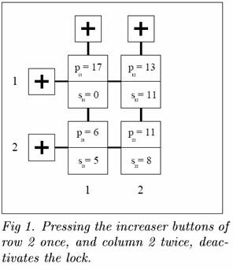

Problem D
Circular Lock
Input: Standard Input
Output: Standard Output
For the fourth time this month only, the absent minded mathematics professor Bolkas had lost his keys. Realizing, that a change of personality to one that keep track of trivialities seemed unlikely, he started to invent a lock with a non-material key. Of course, he could just have chosen a combination lock, but as there were far too many numbers flying around in his daily thoughts, this idea was indeed a poor one. What he needed, was a lock which could be deactivated by solving a mathematical problem. For this type of lock, he could always be certain to have the “key" on him. However, for the sake of safety, the problem had to be hard enough for anyone trying to find the solution merely by testing all possibilities. Still, if you knew the mathematics behind the lock, you should be able to deactivate it.
Being a big fan of modular arithmetics, Bolkas designed the lock as a 2 × 2 array of four modular devices (cf. fig. 1). A modular device is a discrete counter with a display showing the current state of the counter, and a trigger. Each counter can be in any of the states 0, 1, …, p-1, where p ≥ 1 is the period of the counter. By trigging a counter, the state of the counter changes from i to i + 1, except when the state is p-1, in which case the new state is 0. For each row and each column of the array, the professor put an increaser button on the panel of the lock. By pushing the increaser button for a row or column, both counters in that row or column are trigged. The lock is deactivated exactly when all four modular devices are in state 0. Bolkas also added a mechanism to activate the lock. Upon locking, each modular device is put in a randomly chosen state, not all equal to 0 (since in that case the lock would be immediately deactivated). Sadly enough, the professor soon found that for some quadruples of periods, it sometimes happened that the lock was put in a combination of states such that it could not be deactivated! However, it did not take him long to find an interesting relation between the locks, which helped him, and hopefully you, to decide if a lock could be deactivated or not:

He observed that a lock whose modular devices had the periods p11, p12, p21, and p22, and were put in the states s11, s12, s21, and s22, could be deactivated if and only if a lock with all modular devices having the same period p = gcd(p11, p12, p21, p22), and the states s´ij = sij mod p, could. The function gcd(a, b, c, d) is the greatest common divider of a, b, c, and d.
The first line of input consists of a single positive integer n. Thereafter n scenarios follow. Each scenario consists of two rows of four integers each. Row i of each scenario, (1 ≤ i ≤ 2), contains the four integers si1, si2, pi1, and pi2 in that order. sij and pij are the current state and period respectively, of the modular device at row i and column j. No period pij is larger than 10000, and 0 ≤ sij < pij .
For each scenario, output one line containing the text “Yes”, if it is possible to deactivate the lock by pressing the four row and column increaser buttons in some order. Otherwise the text “No” should be printed.
|
2 0 11 17 13 5 8 6 11 1 1 3 3 1 0 3 3 |
Yes No |
Swedish National Contest